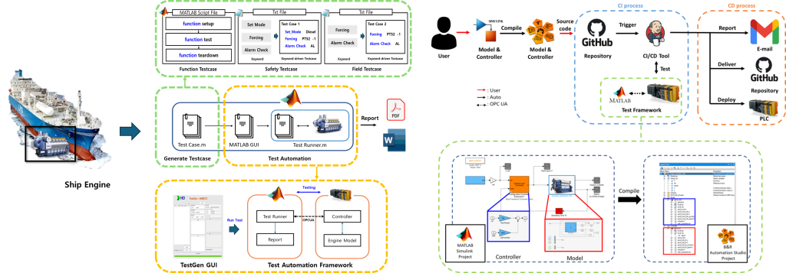
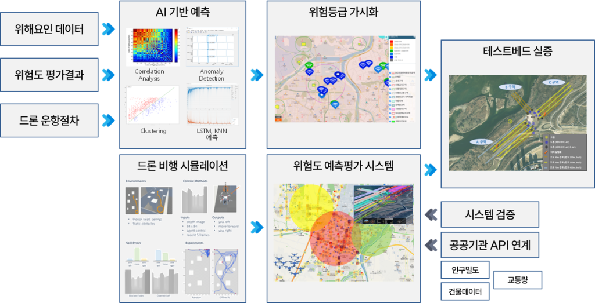
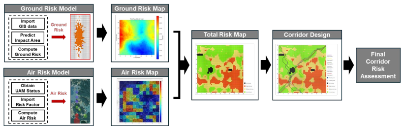
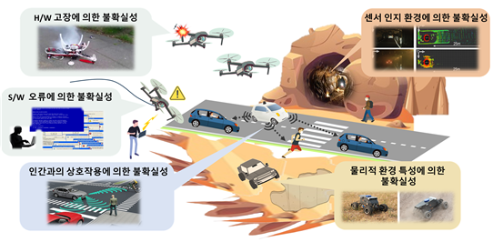
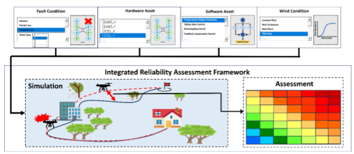
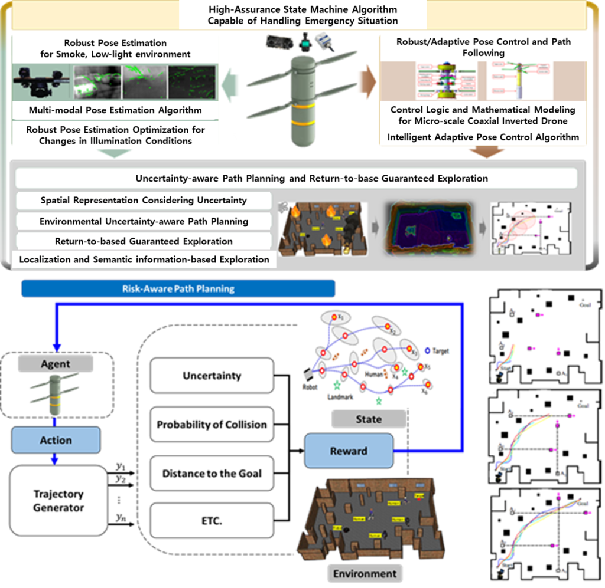

ON-GOING RESEARCH PROJECTS (AT UNIST)
- Ministry of Environment Project [Mar 2025 ~]
Project Title: Technology Development of Atmospheric Environment UAV One-Stop Platform
Research Objective: Development of UAV operating system for air environment management: Detection, Analysis, and Prediction platform. This platform enables real-time, analysis, and prediction of air pollutant by integrating UAV-based monitoring with AI-driven environmental prediction modeling.
Funding Agency: Ministry of Environment

- InnoCORE Program [Jan 2025 ~]
Project Title: InnoCORE Program – AI-Transformed Aerospace (AITA) Research Group
Research Objective: The project aims to develop and integrally validate high-speed, high-reliability autonomous flight AI technologies. Autonomous flight AI algorithms will be designed to enable stable and agile path planning and control in high-speed, high-maneuverability environments. The technology will be expanded into a universal and diversified swarm autonomous flight capability applicable to various platforms. High-reliability AI algorithms for precision autonomous flight will be developed and subjected to integrated verification in real-world environments.
Funding Agency: Ministry of Science and ICT

- Hyundai Heavy Industries Project [Jan 2025 ~]
Project Title: Automated testing environment for marine engine control logic with simulator in hardware
Research Objective: Automate functional safety and performance testing of marine engine control logic with the built-in simulator. In addition, establish a continuous integration process for an efficient and scalable development environment.
Funding Agency: Hyundai Heavy Industries

- KAIA-Drone Project [April 2025 ~]
Project Title: Development of Risk-based Prediction and Assessment Technology for Safe UAS Flight in Urban Areas
Research Objective: Establishment of a Korean Drone Risk Assessment Framework through the Development of Risk Assessment Standards and a Risk Prediction and Evaluation System for Ensuring the Safety of Urban Drone Flights
Funding Agency: Korea Agency for Infrastructure Technology Advancement (KAIA)

- K-UAM Project [April 2024 ~]
Project Title: UAM Corridor Risk Assessment and Visualization for Corridor Design Automation
Research Objective: To develop a Corridor Risk Assessment Framework for Urban Air Mobility (UAM) to assess and visualize risks when designing corridors in urban areas. The goal is to minimize both ground and air risks, ensuring the safe integration of UAM systems with existing air traffic operations.
Funding Agency: Korea Agency for Infrastructure Technology Advancement (KAIA)

- NRF Project [April 2024 ~]
Project Title: Research on Cyber-Physical-Human Uncertainties and Countermeasures for Trustworthy Mobility Systems
Research Objective: To develop a methodology to analyze uncertainties inherent in cyber, physical, and human aspects of mobility systems and propose effective approaches to ensure overall system safety and reliability
Funding Agency: National Research Foundation of Korea (NRF) grant funded by the Korea government (MSIT).

- KATECH Project [March 2024 ~]
Project Title: Development of performance and reliability assessment methodology for Lift-Cruise Type AAM (Advanced Air Mobility)
Research Objective: Develop an efficient methodology for the assessment of attainable control authority and reliability of AAM flight control system under actuator faults and diverse wind conditions
Funding Agency: Korea Automotive Technology Institute (KATECH)

- Civil-Military Dual Use Technology Development Project [November 2023 ~]
Project Title: Development of micro intelligent drone for autonomous mission in communication/GPS-denied environments
Research Objective: Develop a Level 4 micro-scale intelligent drones with target/situation recognition capabilities for communication/GPS shadowed environments where human intervention is challenging due to low light, smoke, and flames. The deliverable is to successfully demonstrate the drone in both simulated and real-world scenarios.
Funding Agency: Ministry of Trade, Industry and Energy, Defense Acquisition Program Administration, Institute of Civil-Military Technology Cooperation(Agency for Defense Dvelopment(ADD)), POONGSAN corp.

- RLRC Project [July 2020 ~]
Project Title: Eco-friendly smart ship parts technology innovation center (EPIC)
Research Objective: To develop an Intelligent sensor cluster system for the future connected smart ship. The project is exploring how to combine intelligent sensor networks with advanced interference-free wireless technologies in an optimum way for autonomous smart ship operation monitoring.
Funding Agency: National Research Foundation of Korea(NRF) grant funded by the Korea government(MSIT)


PAST RESEARCH PROJECTS (AT UNIST)
- ADD Project [February 2024 ~ January 2025]
Project Title: Damage Model Prototyping from High-level Threat Flight Vehicle and A Study on the Test/Evaluation Methods for the System Performance
Research Objective: Develop and validate models for assessing and visualizing damage from high-threat flying objects, predict threats probabilistically, and compare machine-recommended engagement strategies against actual outcomes
Funding Agency: Agency for Defense Development (ADD)

- Hyundai Heavy Industries Project [May 2022 ~ December 2024]
Project Title: Automated testing environment for marine engine control logic with simulator in hardware
Research Objective: Automate functional safety and performance testing of marine engine control logic with the built-in simulator. In addition, establish a continuous integration process for an efficient and scalable development environment.
Funding Agency: Hyundai Heavy Industries

- AIIP Project [January 2023 ~ December 2024 ]
Project Title: A.I.-based integrated framework of safety verification and fault management for ADS
Research Objective: Develop effective and efficient A.I. modules for safety verification and fault management. Minimize unnecessary simulation and reduce testing time by generating safety-critical scenarios. Simulate selectively and accelerate the safety verification process of ADS by predicting the result of the simulation. Optimize planning and control parameters to cope with dangerous scenarios.
Funding Agency: UNIST

- KEPCO Project [March 2020 ~ February 2023]
Project Title: Fully autonomous drone flight key technology development for inspection of large power transmission line
Research Objective: To develop an Intelligent fully autonomous Drone system for the future transmission line inspection. The project is exploring how to recognize the transmission tower intelligently, autonomous flight access technology, and power line path following.
Funding Agency: Korea Electric Power Corporation (KEPCO)

- NRF Project [March 2020 ~ February 2023]
Project Title: Research on high-assurance cyber-physical system (CPS) based on integrated control model
Research Objective: To develop a methodology to analyze potential cyber threats and maximize the reliability of CPS through an integrated approach incorporating computer science and control theory.
Funding Agency: National Research Foundation of Korea(NRF) grant funded by the Korea government(MSIT)

- 국가혁신클러스터 R&D Project [October 2020 ~ December 2022]
Project Title: Development of core component failure diagnosis, prediction and response technology for self-driving electric vehicle
Research Objective: Establish fault diagnosis and response technology process and system evaluation protocol. Based on evaluation protocol, develop autonomous driving and fault diagnosis/response technology. As a result, improve and optimize integrated autonomous driving system performance capable of responding to failures through verification simulation.
Funding Agency: Ministry of Trade, Industry and Energy (MTIE)

- Alchemist Project [September 2020 ~ May 2021]
Project Title: Development of ultra-safe and multipurpose multi-copter type personal flying mobility
Research Objective: To develop an Off-the-Ground Mobility that can be controlled by a person on board, while floating on the surface of the ground. The mobility should guarantee safety through risk analysis/management and be able to reject disturbance especially from ground-effect.
Funding Agency: Ministry of Trade, Industry and Energy (MTIE)

PAST RESEARCH PROJECTS (AT PURDUE)
- NASA ADNRA Project [August 2017 – May 2018]]
Project Title: Anomaly Detection in National Airspace System
Research Objective: Develop an unsupervised learning approach to effectively identify a priori unknown safety threats or emerging risks using Temporal logic learning based anomaly & precursor detection algorithms - Purdue Discovery Park Big Idea Challenge [August 2017 – May 2018]
Project Title: Towards Cyber-Physical Vetting of Critical Infrastructures
Research Objective: To develop an integrated framework for analyzing a CPS form both “cyber” and “physical” perspectives, revealing and mitigating the cyber, physical, and control vulnerabilities in the CPS - UTM Research supported by Korea Aerospace Research Institute (KARI) [June 2017 – December 2017]
Project Title: Survey on Communication and Multi-Sensor Technologies for Precise Integrated UAS Navigation
Research Objective: To review the global trend of the state-of-the-art UAS communication and multi-sensor technologies, and identify the feasible and practically applicable technologies to UTM systems - NASA Phase I SBIR Contract No. NNX15CD22P [July 2015 – December 2015]
Project Title: Onboard Model Checking for Small-Scale UAV Autopilots
Research Objective: To develop a model-checking-based verification and validation (V&V) tool for UAV autopilot systems, and fabricate / flight-demonstrate the validity of the V&V tool with the small-scale UAV - National Science Foundation (NSF) CAREER Award CNS-0746299 [August 2012 – April 2015]
Project Title: Hybrid Estimation and Real-Time Computational Algorithms for Networked Embedded Hybrid Systems
Research Objective: To develop theory, computational efficient numerical algorithms, and experimental testbeds for stochastic hybrid systems, with application to mobile networked embedded systems - UAV Cybersecurity Research supported by Sypris, Inc. [September 2011 – May 2013]
Project Title: A Comprehensive Approach to Cybersecurity Analysis in UAVs and Other Unmanned Systems
Research Objective: To develop the supervisor to be introduced into the current UAV autopilot system, which will make the system robust to cyber attacks